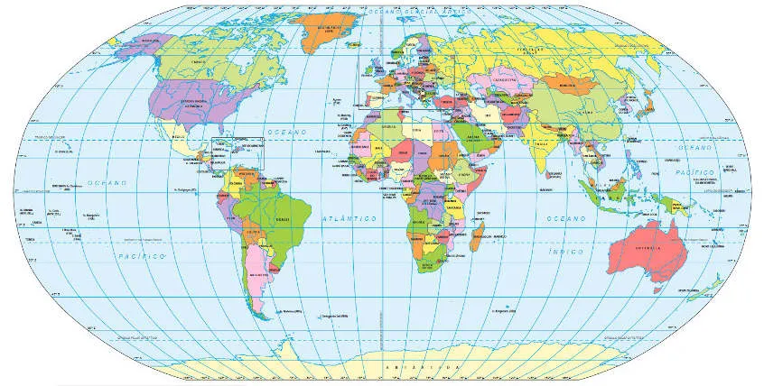

O mundo é atualmente composto por um conjunto de 193 países reconhecidos internacionalmente. Todos apresentam um território, um sistema de governo próprio e uma população.

"Existem 195 países no mundo hoje. Este total compreende 193 países integrantes da Organização das Nações Unidas e dois países observadores: Vaticano-Santa Sé e o Estado da Palestina, este representado na ONU pela Autoridade Nacional Palestina. Não estão na lista dos 195 países: Taiwan, Ilhas Cook e Niue. As Nações Unidas consideram Taiwan representado pela República Popular da China. Já as Ilhas Cook e Nieu, no Oceano Pacifico, são estados em livre associação com a Nova Zelândia."
Quantos países há por continente?
Os 195 países estão divididos pelos cinco continentes. A África é o que tem o maior número de nações.
- 54 países estão na África
- 48 na Ásia
- 44 na Europa
- 35 na América
- 14 na Oceania